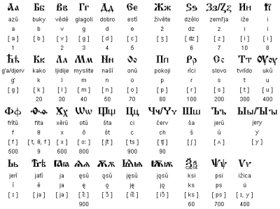
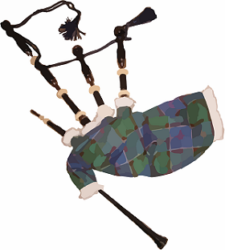

Érdekességek Bulgáriáról
1. A bolgárok fordítva bólogatnak vagy ingatják a fejüket, mint a világ többi részein, ami gyakran vidám helyzetekhez vezet, és számos beszélgetés témája a bolgárok és az országot látogató külföldi emberek között. Ha egy bolgár csóválja a fejét az igen, ha pedig bólogat az nemet jelent. Ez a szokás az ország oszmán megszállás alatt a törökök megtévesztésére alakult ki.
2. Európa legrégebbi országa Bulgária. U. 681-ben alapítottak és az egyetlen európai ország, amely sosem változtatta meg a nevét a létesítés után.
3. Bulgária volt az erős és verhetetlen hős Spartacus szülőhazája.
4. A világ legrégebbi aranykincsét Bulgária területén találták. Várna városától nyugatra, egy a Fekete-tenger part közelében található temetkezési helyen. Az ásás során több mint 3000 aranytárgyat találtak a régészek, amelyek több mint 6000 évesek voltak. A feltárt temető korát Kr.e. 4560-4450 körülire teszik a régészek.
5. Bulgáriából származik a cirill ábécé. amit a bolgárok a mai napig használnak. A cirill betűket a 9. században fejlesztették ki egy iskolában, Cyril és Method keresztény misszionáriusok, később szentté is avatták őket.
6. Bulgária Skócián és Írországon kívül az egyetlen másik nemzet, amely dudát használ . A hangszer bolgárul gaida néven ismert, és általában kecske- vagy juhbőrből készül.
7. A bolgár rózsa az ország szimbóluma, egyben jelentős exportcikk. Bulgária adja a világ rózsaolaj termelésének 85% -át. A Rózsa-völgy néven ismert régiójában termelt rózsaolaj nagyon fontos, mivel a parfümgyártás fontos alapanyaga. A rózsák nehéz munkát jelentő betakarítása május-júniusra esik.
8. A Lactobacillus Bulgaricus az a baktérium, amely a bolgár joghurt egyedi ízének és állagának előállítására használnak. A baktériumok csak Bulgáriában találhatók meg.
9. Az UNESCO 1976-ban az ősi bolgár naptárat nyilvánította a világ legpontosabb naptárának.
10. Az UNESCO világörökségi védelem alatt álló csodaszép Rilai kolostor Szófiához közel található. A több mint 1000 éve született Rila Szent Ivánból kapta a nevét. A kolostor múzeumának leghíresebb darabja a rilai fakereszt egy fából készült feszület 104 bibliai jelenettel és 650 miniatűr figurával amit egy Rafail nevű szerzetes alkotott nagyítóval 1588-ban.